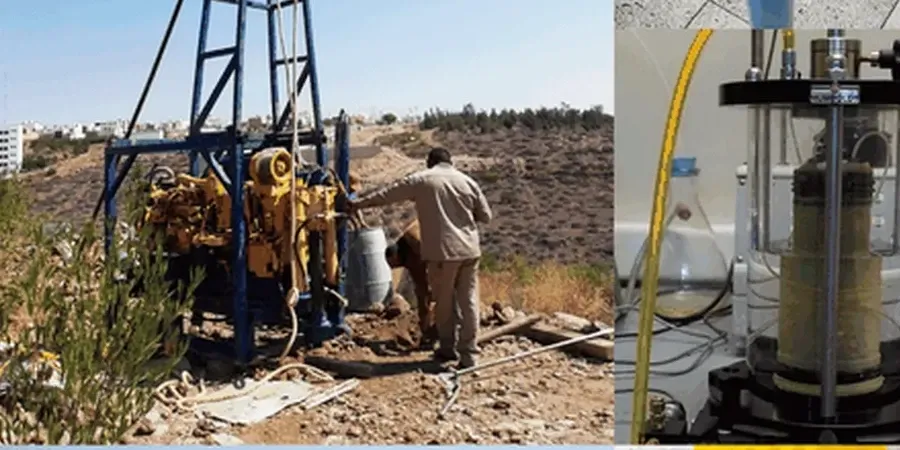

Our Oceanside office delivers comprehensive geotechnical services tailored to the coastal and inland conditions of San Diego County. From site characterization and foundation design to subsurface investigation and construction monitoring, we provide the technical depth needed for residential, commercial, and public works projects. By integrating consolidated regional experience with calibrated equipment, we ensure code-compliant reports that support safe and efficient development. Whether your project requires undisturbed sampling for sensitive soils or a full soil mechanics study, our team is equipped to address the unique challenges of Oceanside’s varied terrain.

Method and coverage
Regional considerations
Our firm brings deep local knowledge to Oceanside, built on years of background across San Diego County’s coastal and inland developments. We operate a calibrated in-house laboratory for soil classification and strength testing, and we maintain close coordination with local contractors, engineering firms, and building officials. Every report we produce complies with current building codes and ASTM standards, ensuring smooth permit approvals. By combining regional geological insight with rigorous technical practices, we deliver reliable geotechnical solutions that support project success from concept through construction.
Process video
Standards that apply
Our work in Oceanside follows the governing standards of the United States, including the International Building Code (IBC) for structural and foundation requirements, and ASCE 7-22 for seismic load calculations. Site investigations adhere to ASTM standards such as D1586 (Standard Penetration Test), D2487 (Unified Soil Classification), and D422 (Grain Size Analysis). We also reference California-specific guidelines like the California Building Code (CBC) and the Seismic Hazards Mapping Act for liquefaction and landslide evaluations. All laboratory testing and reporting comply with these codes to ensure regulatory acceptance and project safety.
Top questions
What are typical soil conditions for new homes in Oceanside?
In Oceanside, soils vary from dense sands and gravels near the coast to stiff clays and weathered bedrock inland. Shallow foundations are common, but high groundwater in low areas may require drainage or specialty designs. A site-specific investigation is recommended to determine bearing capacity and settlement potential.
Does Oceanside have seismic concerns I should know about?
Yes, Oceanside is in a seismically active region with potential ground shaking from nearby faults. Liquefaction is a risk in saturated sandy soils near the coast or river channels. Our investigations evaluate these hazards per ASCE 7-22 and CBC requirements, often recommending deep foundations or soil improvement for critical structures.
What building codes apply to geotechnical work in Oceanside?
Projects in Oceanside must comply with the California Building Code (CBC), which adopts the IBC with state-specific amendments. Seismic design follows ASCE 7-22, and all soil testing uses ASTM standards. Our reports are prepared to meet these codes and support permit applications with local building officials.
How long does a typical geotechnical investigation take for a commercial project in Oceanside?
Timelines depend on site size and complexity, but a standard investigation—including drilling, lab testing, and reporting—usually takes 3 to 5 weeks. Factors like access restrictions, groundwater conditions, or required seismic analyses can extend the schedule. We coordinate closely with your team to align with project milestones.
Location and service area
We serve projects across Oceanside.